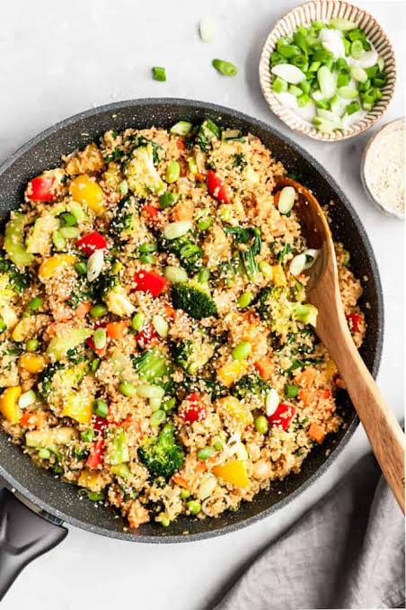

Remedies

Berry Smoothie
Ingredients
berries, banana, yogurt
tablespoon chia seeds
almond milk

Salmon Salad
Ingredients
salmon fillet,Cherry tomatoes
Mixed green, avocado
Olive oil and lemon juice

Quinoa and Veg. Fry
Ingredients
quinoa, bellpeppers
carrots, Tofu/chicken
soysauce, broccoli
Spinach & Tomato Omelette
Ingredients
Eggs,spinach
Oliveoil, tomatoes

Avocado Toast with Eggs
Ingredients
Whole-grain,eggs
Ripe avocado
Turmeric and Lemon Face Mask
Ingredients
yogurt,turmeric powder
lemon juice